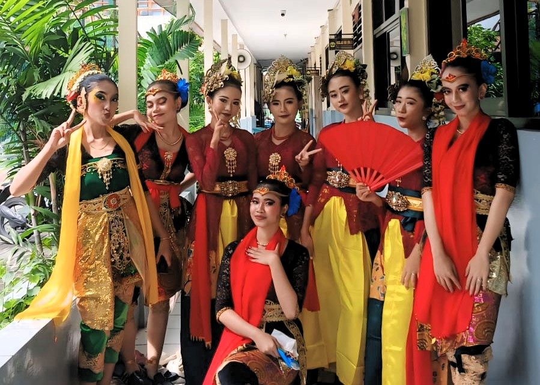

SMATUNAS HARAPAN kembali menunjukkan eksistensinya dalam pelestarian budaya melalui penampilan tari Jaipong Rahyang Mandalajati. Tarian ini membawakan kisah semangat juang, kebangkitan, dan kemenangan, menggambarkan nilai-nilai luhur yang ditanamkan sejak dini kepada para siswa.
Dalam penampilan kali ini, siswa-siswi tampil dengan kostum tradisional penuh warna dan gerakan enerjik yang memukau penonton. Dengan diiringi musik khas Sunda, suasana menjadi sangat meriah dan penuh semangat.
Kegiatan ini merupakan bagian dari program ekstrakurikuler seni tari yang rutin dilaksanakan di sekolah sebagai wujud komitmen dalam melestarikan kebudayaan Nusantara.
“Kami ingin siswa tidak hanya cerdas secara akademik, tapi juga kaya akan budaya,” ujar salah satu guru pembimbing kegiatan ini.
Semoga kegiatan seperti ini dapat terus berlanjut dan menjadi inspirasi bagi sekolah lain dalam menjaga warisan budaya bangsa.
← Kembali ke Berita 🔍 cek postingan nya